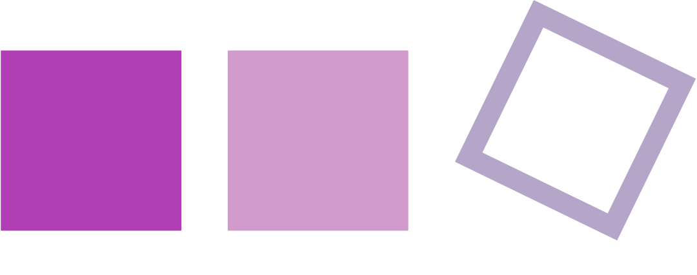

direkt
offen
präzise
➸ Richtungen erkennen
➸ Systeme verstehen
➸ Verbindungen hören

Wer ist Annika Mari?
Systemische Coachin
(u.A. SySt Institut)
Prozesse
Organisationsentwicklerin
(iSYS)
Räume
Softwareentwicklerin
(2015–2025)
Technologie
Mathematikerin (B.Sc.)
Schärfe
Volkswirtin (B.Sc.)
Dynamiken